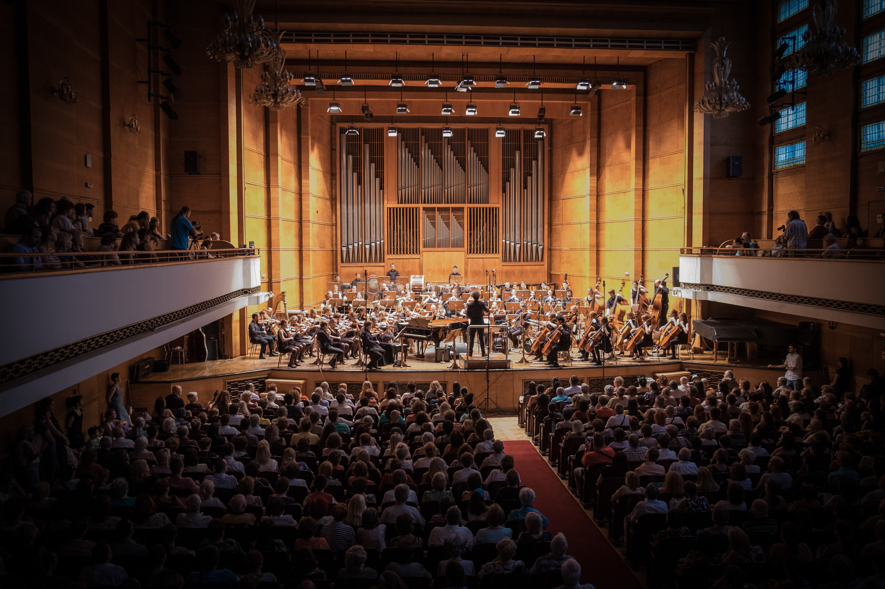

We Five orchestras include those made up of students from an elementary school or a high school, youth orchestras, and community orchestras; she started her orchestra in April, 2015 after she graduated from the University
The year that follow, 2016 precisely; she got a job with the hive orchestra group, she instructed for the next two years, about this time she had amassed great fame, especially because she was dedicated at adding value to kids at the elementary school and high school.
By the end of 2018 Semantha had left the Hive's orchestra to start her orchestra which she named "We Five", it was one of the best moments of her lives, especially because she anticipated to start her own orchestra group with so such enormous and defiant effort.

Semantha started her We Five orchestra with elementary kids which basically was focused on girls, between the ages of 8 to 12. as she progressed she incorporated girls from high school between ages 12 to 16.
A year after We Five kicked off, Semantha stumbled into Joan at the Restaurant at Bellview; an old time friend, they both got discussing. Joan opened her eyes on the need for gender balance and community building through her orchestra group, it was welcomed and embraced by Semantha.
Few months after, Semantha incorporated youths into her orchestra, this time carrying along the male folk; today she continues to enjoy the dividends of Joan's advice, the rest is history.